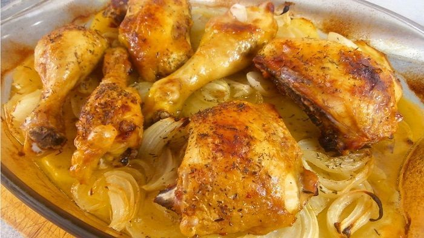

POLLO AL HORNO CON PATATAS Y CEBOLLA ASADO

Me encanta esta receta de pollo asado al horno con patatas y cebolla.
Al igual que todas las recetas de pollo que preparamos en Cocina Casera y Fácil,
esta elaboración es muy fácil de hacer y no requiere de mucho esfuerzo. Pero sin duda,
lo mejor de todo, es lo bien que queda. Para ello voy a enseñarte algunos trucos para que la
carne no quede seca a la hora de servir este plato. Además, lo que vamos a hacer va a ser cocinar
esta ave con su guarnición, todo a la vez, provocando que sus propios jugos se mezclen con esta
guarnición, obteniendo una receta espectacular. Tienes la receta en video justo a continuación
para ver su elaboración. Para preparar
un delicioso pollo al horno con patatas y cebolla, necesitarás los siguientes ingredientes:
Ingredientes
Ingredientes para 4 personas
- 1 pollo entero o 4 muslos completos (cuartos traseros)
- 4 patatas medianas
- 4 cebollas medianas
- Aceite de oliva
- Sal y pimienta
- Tomillo seco
Preparación
- Comenzamos pelando las patatas. Una vez peladas, las cortamos en rodajas finas, de no más de 1 centímetro de grosor. Después, las ponemos como base en una bandeja para horno. Pelamos también las cebollas y las cortamos en tiras finas. La ponemos sobre la patata y salpimentamos todo.
- A continuación ponemos los muslos encima de las patatas y la cebolla. Le añadimos a todo un vaso de agua y un chorrete de aceite de oliva. Así quedará mas jugoso mientras se hornea. Nos aseguramos que en el fondo de la fuente, haya siempre humedad. Así la guarnición no se va a quemar. Salpimentamos y añadimos un buen pellizco de tomillo seco a cada muslo (o al pollo completo, si has elegido la pieza completa)
- Metemos el pollo al horno a 220ºC si utilizas muslos. calor arriba y abajo. Dejamos hornear unos 30 minutos, hasta que se dore bien. Si utilizas un pollo entero, horneamos a 190ºC.
- Cuando esté bien dorado, sacamos la bandeja del horno, le damos la vuelta a las piezas. Así, se cocinará el otro lado.
- Inmediatamente después, volvemos a meter la bandeja dentro del horno. Finalmente dejamos cocinar aproximadamente el mismo tiempo, hasta que todo quede bien cocinado.
Pollo al horno con patatas y cebolla listo! Como resultado de poner la guarnición abajo del todo, aprovecharemos los juguitos que suelta el pollo durante el horneado ¡Éstos se mezclaran con la guarnición y tendremos una mezcla de sabores explosiva!
Pagina principal